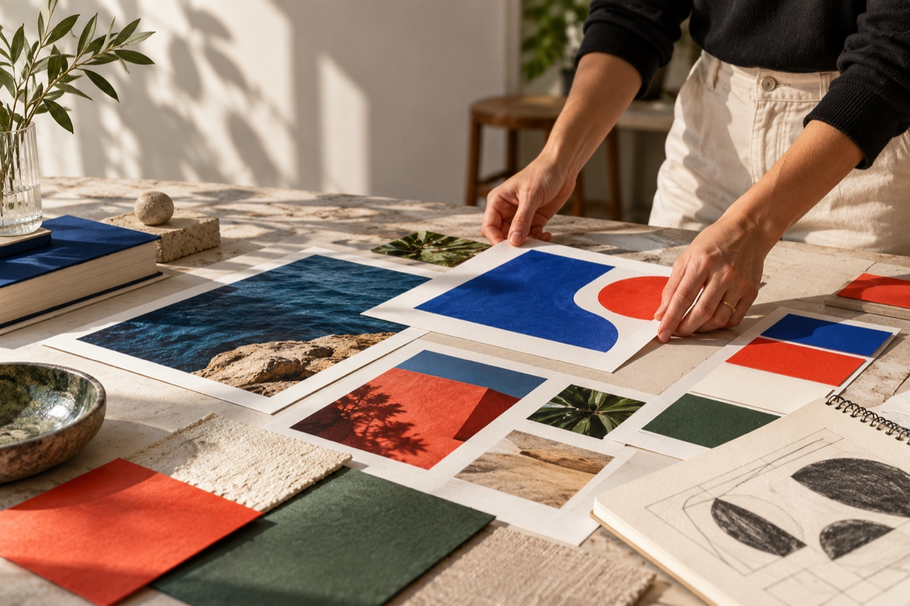

DISEÑO VISUAL · IDENTIDADPortafolio de demostración · 2026
LUZ
RUIZ

Imagen generada para esta demostraciónUN PERFIL CON PERSONALIDAD
Diseño que encuentra su propia voz.
Una página puede organizar proyectos por especialidad, hacer visibles los servicios y presentar una forma clara de iniciar una colaboración.
lr—
CASOS DE MUESTRA
Una selección de trabajo.
Estos son ejercicios de muestra, no trabajos previos de una persona real.Filtros activos al seleccionar una categoría
El estudio
Del primer trazo al sistema completo.
En un portafolio real, este espacio cuenta el proceso y el tipo de colaboración que buscas.
DescubrirContexto, audiencia, necesidad y personalidad de marca.
ExplorarRutas visuales, referencias y dirección creativa.
ConstruirSistema de identidad, piezas y guía de aplicación.
EntregarArchivos organizados, formatos y recomendaciones de uso.
PortafolioUna página + hasta tres proyectos
$3,500 MXNVer paquete ↗